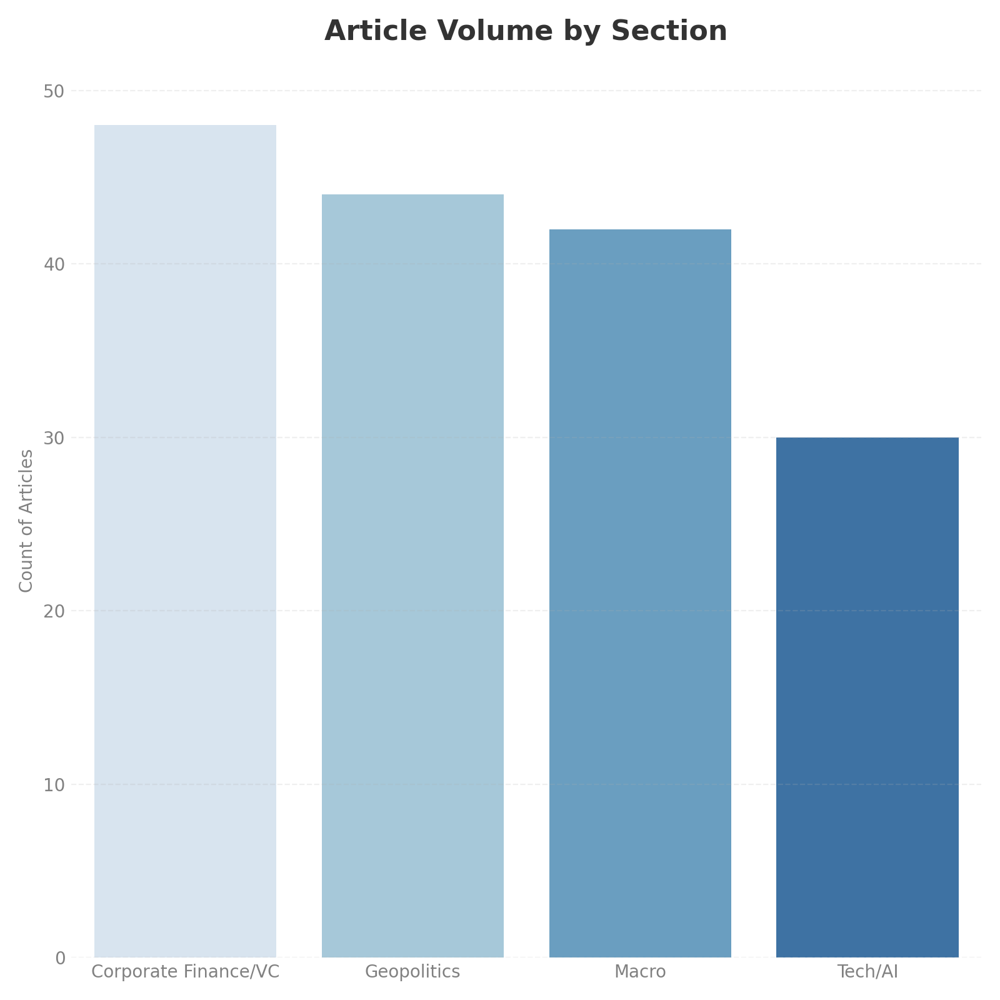
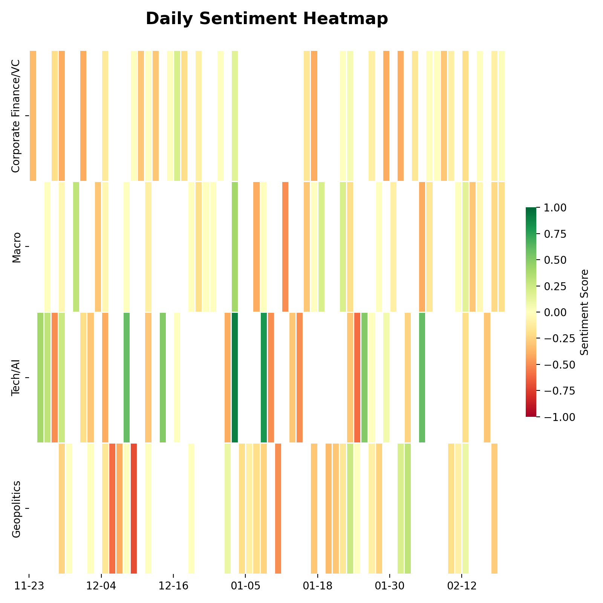

MarketSenseAI Daily Dashboard
Automated Financial Intelligence Pipeline
| Avg Market Sentiment Score | Top Driver Section |
|---|---|
| -0.10 | Corporate Finance/VC |
48-Hour Market Snapshot
| Date | Processed Articles | Refresh Frequency |
|---|---|---|
| 2026-02-18 | 164 | Daily |
Key Market Drivers
High-impact articles identified based on strategic relevance and sentiment magnitude.
| Article Details | Section | Score |
|---|---|---|
| What flying cars, quantum computing and fusion have in common Some perennial technologies of tomorrow are finally turning into real businesses |
Tech/AI |
0.90 |
| Self-driving cars will transform urban economies A robotaxi boom is coming. The impacts might be broader than you expect |
Tech/AI |
0.80 |
| The “ChatGPT moment” has arrived for manufacturing Artificial intelligence promises to transform how and where things are made |
Tech/AI |
0.80 |
Market Trends & Sentiment Analysis
Nasdaq 100 vs. 10Y Treasury Yield (Rolling 3 Months)
Hover over the red circles to see the specific news events that triggered significant market moves.
Section-wise Volume & Sentiment Heatmap (Rolling 90 Days)


Tech-focused Strategy Matrix
This matrix categorizes headlines into a strategic decision framework.
| Keyword | Trend | Tech Reality | Biz Impact |
|---|---|---|---|
| Agents | Autonomous systems deployment. | Self-driving vehicles and robots move from pilot to operational, facing public acceptance challenges. | New service models emerge, impacting urban economies and consumer interaction, alongside public resistance. |
| Inference | AI integration accelerates. | AI applications expand across industries, driving new capabilities and job roles, but adoption expectations vary. | Market financialization and investment surge, creating new opportunities and challenges for existing business models. |
| GPU | Chip market competition intensifies. | Dominance in AI chip manufacturing is contested, with new entrants challenging established leaders like Nvidia. | Supply chain dynamics shift, impacting hardware costs and strategic partnerships for AI development. |
| ROI | AI investment scrutiny rises. | Significant capital flows into AI, but profitability and sustainable returns remain uncertain for many ventures. | Market volatility increases, requiring careful valuation and risk management for AI-related investments. |
| Regulation | Policy and public response. | Emerging technologies face scrutiny, influencing development and deployment parameters. | Companies must navigate evolving political discourse and public sentiment to ensure market acceptance. |
Sector-wise Deep Dive
Opportunities, Risks, and Watchlist items derived from The Economist archives.
Corporate Finance/VC
Opportunities
- AI financialization, major tech IPOs, and M&A activity present significant investment avenues.
Risks
- AI and crypto markets show bubble characteristics, with potential downturns and margin pressures.
Watchlist
- Monitor regulatory actions, leadership changes, and disruptive tech impact on traditional finance.
Geopolitics
Opportunities
- New trade agreements and strategic geopolitical shifts offer market access and influence.
Risks
- Trade protectionism, sanctions, and unstable foreign policy create market and operational uncertainties.
Watchlist
- Monitor shifts in political power, judicial decisions, and evolving domestic policy priorities.
Macro
Opportunities
- Strong startup activity and an accelerating economy suggest robust growth and job market resilience.
Risks
- Dollar depreciation, political influence on the Fed, and fiscal crises pose economic instability risks.
Watchlist
- Monitor Federal Reserve appointments, executive-central bank relations, and new tax/social policies.
Tech/AI
Opportunities
- AI and autonomous tech create new industries, jobs, and transform existing sectors.
Risks
- Overhyped AI adoption, market saturation, and public resistance pose significant challenges.
Watchlist
- Monitor AI’s impact on platforms, key company milestones, labor markets, and political sentiment.
Methodology
Workflow Overview This dashboard is generated by an automated Python pipeline (fin_news_dashboard.py) that executes the following steps daily:
- Data Ingestion (ETL): The system scrapes RSS feeds from The Financial Times (Markets) and The Economist (Business, Finance, US).
- Filtering Logic:
- Time: Applies a 48-hour window for daily news and a 90-day rolling window for macro trends.
- Relevance: Articles are auto-tagged into 4 categories (Macro, Tech/AI, Geopolitics, Corporate Finance).
- AI Analysis (LLM):
- Engine: Google Gemini 2.5 Flash.
- Scoring: Sentiment is scored on a continuous scale (-1.0 to +1.0) based on operational and strategic impact.
- Summarization: The model synthesizes “Opportunities” and “Risks” into the strategic matrix.
- Visualization: Data is aggregated using Pandas and visualized using Plotly (interactive) and Seaborn (static).
Efficiency: This automated process reduces analysis time from approximately 8 hours/week to 10 minutes/week.